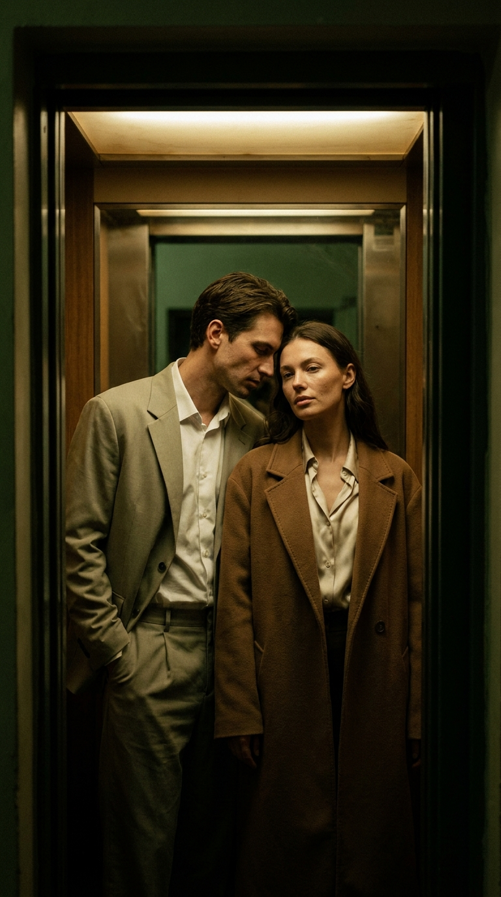
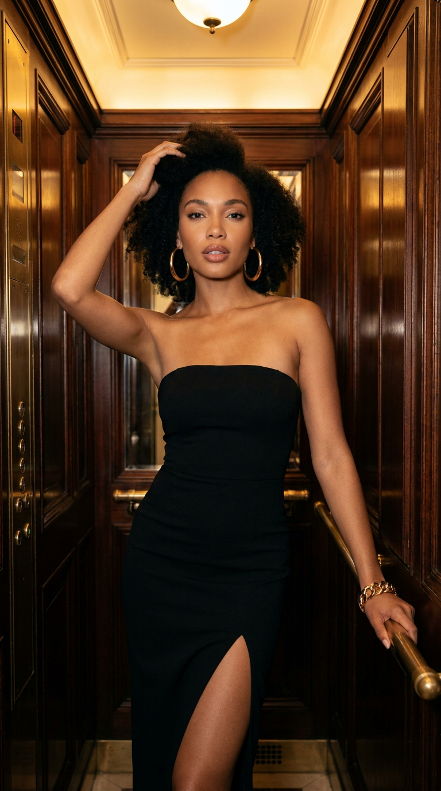
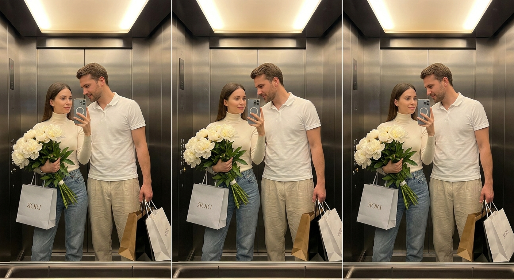
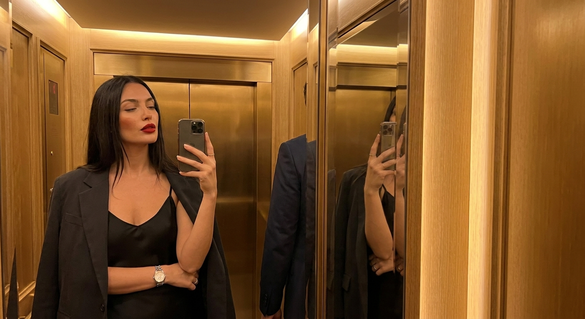
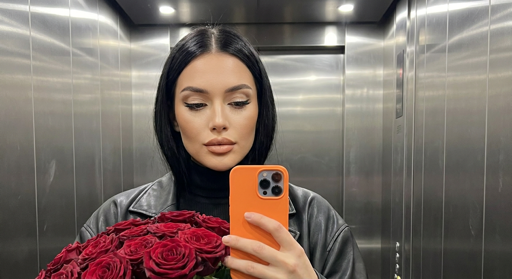
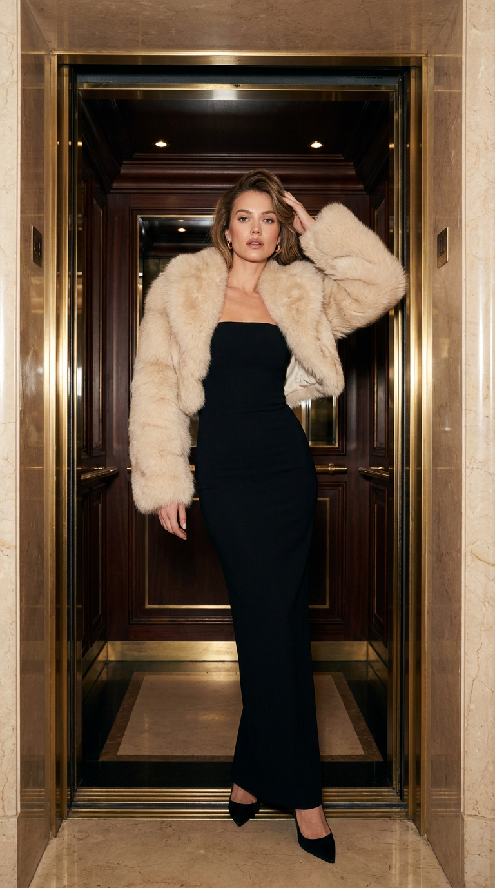
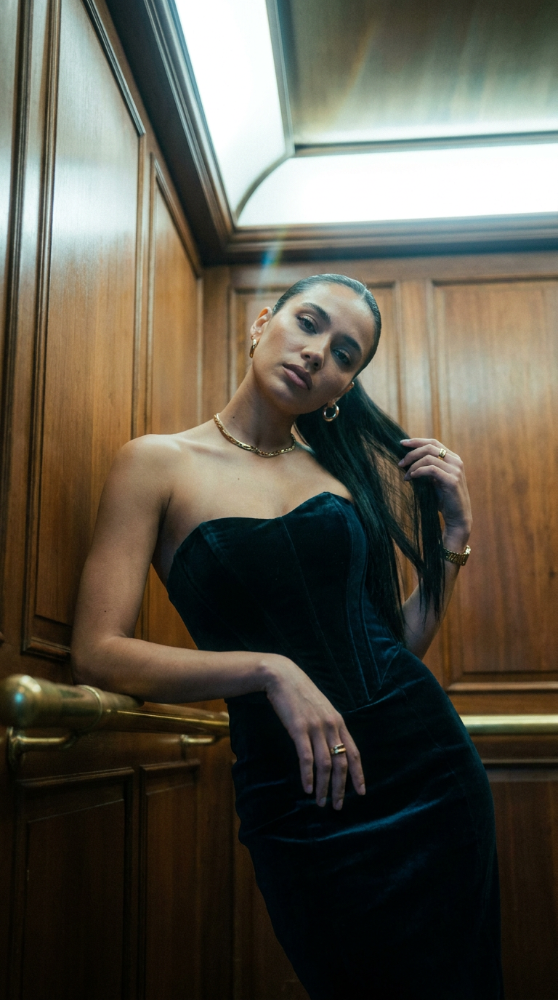
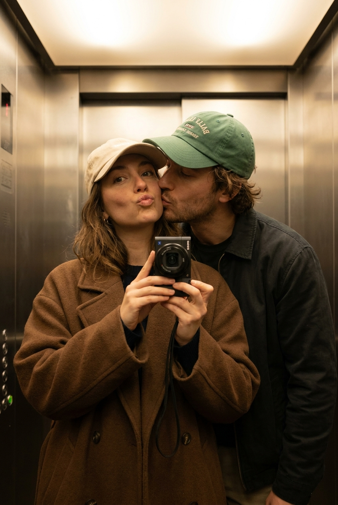

ИИ-фото в лифте: 8 промптов для нейросети

Снимок в лифте легко превращается в случайное селфи с кривым зеркалом, лишними пальцами и неубедительной одеждой. Генерация помогает заранее задать свет, позу, интерьер и настроение, чтобы получить кадр с журнальной композицией.
В подборке — восемь сценариев: от уютного снимка пары и игривого поцелуя до luxury-портретов в старинной кабине, зеркального селфи с покупками и холодного кадра с букетом роз.
Как сгенерировать такое фото: пошагово
Нужен снимок анфас при ровном свете, лицо в кадре целиком, без тёмных очков и головных уборов. Разрешение от 1000 пикселей по короткой стороне. Чем чётче исходник, тем точнее модель повторит черты.
Выберите сценарий ниже и нажмите «Копировать» — текст уйдёт в буфер целиком, вместе с командой сохранения внешности. Эта команда стоит первой строкой и отвечает за то, чтобы на выходе было ваше лицо, а не случайное.
Кнопка «Сгенерировать» рядом с каждым промптом открывает модель в новой вкладке. Nano Banana Pro работает с референсом лица — в отличие от моделей, которые генерируют портрет с нуля и узнаваемость теряют.
Промпт — в поле ввода, портрет — через загрузку референса. Порядок значения не имеет, но без референса команда сохранения внешности работать не будет: модели нечего сохранять.
Для сторис и ленты берите 9:16, для превью и обложек — 4:3. Первый результат редко идеален: если поза или свет ушли не туда, поправьте соответствующую часть промпта и запустите заново. Обычно хватает двух-трёх итераций.
8 промптов для генерации
1. Интимный кадр пары
Строго сохранить внешность по загруженному референсу: черты лица, пропорции, мимику и текстуру кожи без изменений. Вертикальная fashion-фотография 9:16 с кинематографичной композицией: мужчина и женщина находятся внутри лифта, а камера смотрит на них через почти чёрный дверной проём, словно через рамку. Мужчина в свободном светлом костюме и белой рубашке немного наклоняется к женщине, сохраняя сдержанную близость. На женщине коричневое пальто оверсайз поверх светлой шелковой блузы с мягкой фактурой; макияж нюдовый, кожа выглядит естественно и реалистично. Используй приглушённый тёплый верхний свет, глубокие тени на лицах, одежде и стенах, подчёркнутую геометрию тесного пространства. Визуальный стиль 35-мм плёнки: мягкая цветопередача, заметное, но аккуратное зерно, лёгкая винтажная ностальгия. Кадр фотореалистичный, чистый, без надписей, логотипов и водяных знаков.
2. Золотой винтажный портрет

Строго сохранить внешность по загруженному референсу: черты лица, пропорции, мимику и текстуру кожи без изменений. Фотореалистичный luxury fashion portrait женщины в старинном лифте с интерьером из тёмного полированного дерева, латунными деталями и металлическими поручнями. Вертикальный формат 9:16, editorial-съёмка с тёплым золотистым светом от потолочного плафона. Модель стоит уверенно, но без напряжения: одна рука поднята к волосам и касается головы, вторая лежит на поручне, голова немного повернута в сторону. Она смотрит прямо в объектив; выражение спокойное, чувственное и утончённое, губы слегка разомкнуты. Длинные тёмные волосы распущены, уложены мягко и естественно, с умеренным объёмом. Макияж в бежево-коричневой гамме, сияющая кожа с видимой натуральной текстурой, выразительные глаза. Сохрани индивидуальные черты лица по референсу, добавь дорогую журнальную подачу, мягкие тени и реалистичные отражения в металле.
3. Селфи с букетом

Строго сохранить внешность по загруженному референсу: черты лица, пропорции, мимику и текстуру кожи без изменений. Сделай реалистичное зеркальное селфи пары в лифте, вертикальный кадр 9:16, фигуры показаны почти полностью — от головы до обуви. Женщина стоит ближе к зеркалу и держит перед собой смартфон, направляя камеру на отражение. В другой руке у неё большой букет цветов и несколько пакетов с покупками; мужчина находится справа, слегка склоняет голову к ней, смотрит на женщину и тоже держит пакеты. Композиция центрирована на отражении пары. У обоих ровная матовая кожа, освещённая мягким искусственным светом. На женщине аккуратный минималистичный макияж: серо-бежевые тени, тонкая тёмно-коричневая линия вдоль ресниц, коричневая тушь, приглушённые нюдово-розовые губы. Передай бытовую правдоподобность зеркала, естественные позы, детали упаковок и одежды, без лишних пальцев и искажённых лиц.
4. Ночная гостиничная съёмка

Строго сохранить внешность по загруженному референсу: черты лица, пропорции, мимику и текстуру кожи без изменений. Кинематографичное зеркальное селфи в роскошном лифте отеля, вертикальная композиция 9:16. Внутри — панели из тёплого золотистого дерева, мягкий рассеянный свет с потолка, глубокие тени и глянцевые блики на коже; атмосфера позднего вечера, тихая и чувственная. Женщина держит смартфон перед зеркалом, слегка наклоняет голову и смотрит расслабленно, с полуприкрытыми глазами. На ней чёрное шелковое платье-комбинация на тонких бретелях с деликатной кружевной отделкой у выреза, поверх плеч накинут чёрный приталенный жакет, спущенный наполовину. Добавь серебристые часы, минимум украшений и главный цветовой акцент — матовую ярко-красную помаду. Длинные прямые волосы распущены и гладко уложены; макияж безупречный, с подчёркнутыми бровями и мягким контурингом. Рядом в отражении стоит мужчина, впиши его естественно в сцену, не перетягивая внимание с героини.
5. Розы на стальных стенах

Строго сохранить внешность по загруженному референсу: черты лица, пропорции, мимику и текстуру кожи без изменений. Высокодетализированный портрет в формате селфи внутри лифта со стенами из шлифованной нержавеющей стали. Вертикальный кадр, центрированная композиция от груди до макушки; на металлических панелях видны вертикальные линии стыков, мягкие отражения и световые пятна от потолочных точечных светильников. Женщина держит смартфон на уровне глаз и одновременно прижимает к себе огромный пышный букет тёмно-красных роз с насыщенно-зелёными стеблями и листьями. На ней чёрная водолазка и свободная чёрная кожаная куртка. Кожа матовая, гладкая, но с реалистичной фактурой. Волосы густые, блестящие, идеально уложенные, с ровным центральным пробором. Макияж холодный и аккуратный: светло-бежевые тени с прохладным подтоном, чёткая чёрная стрелка, выразительные ресницы и естественный оттенок губ. Передай холодную серебристую гамму лифта, контраст красных роз и правдоподобное отражение телефона.
6. Выход из роскошного лифта

Строго сохранить внешность по загруженному референсу: черты лица, пропорции, мимику и текстуру кожи без изменений. Фотореалистичный full-body luxury fashion portrait в вертикальном формате 9:16: женщина стоит по центру дверного проёма старинного элитного лифта в дорогом отеле. Вся фигура попадает в кадр от головы до пола. Поза статная и уверенная: одна рука поднята к голове и легко касается волос, вторая свободно опущена вдоль тела; взгляд направлен прямо в камеру, выражение холодное, спокойное и уверенное, губы чуть приоткрыты. На модели длинное чёрное облегающее вечернее платье без бретелей либо с высоким воротом, лаконичного силуэта, из гладкой матовой ткани, с длиной в пол. На плечах и руках лежит объёмная светлая меховая накидка кремово-бежевого оттенка с мягкой пушистой фактурой. Оформление лифта — винтажное, с дорогими панелями и декоративными деталями; свет гламурный, мягко подчёркивающий ткань, мех и контуры фигуры. Добавь журнальную editorial-эстетику, реалистичную анатомию и чистый фон.
7. Бархат и латунь

Строго сохранить внешность по загруженному референсу: черты лица, пропорции, мимику и текстуру кожи без изменений. Гламурный editorial-портрет женщины в винтажном лифте, вертикальный формат 9:16. Кабина отделана деревянными панелями тёплых насыщенных оттенков, рядом заметны латунные поручни и декоративная фурнитура. На модели тёмное бархатное или облегающее платье-корсет без бретелей с высоким разрезом на бедре. Образ дополняют массивный золотой браслет-манжета и крупные серьги-кольца. Волосы очень длинные, прямые, гладкие. Женщина слегка отклоняется назад, одной рукой опирается на латунный поручень, а другой отводит волосы от лица; корпус немного подан вперёд, чтобы подчеркнуть линию ключиц, шеи и рельеф рук. Свет направлен сверху и создаёт кинематографичные тени, подчёркивает бархат, металл и силуэт. Сохрани неизменными индивидуальные черты лица, добавь чувственную, но элегантную позу, глубокие тёплые тона и фотореалистичную детализацию.
8. Поцелуй в зеркале

Строго сохранить внешность по загруженному референсу: черты лица, пропорции, мимику и текстуру кожи без изменений. Ультрадетализированная постановочная фотография пары в игривом стиле mirror selfie внутри лифта, вертикальный кадр. Камера находится примерно на уровне груди; в отражении отчётливо виден компактный цифровой фотоаппарат, которым сделан снимок. Женщина стоит перед зеркалом под небольшим углом и держит камеру одной рукой. Мужчина располагается позади неё, наклоняется вперёд и целует её в щёку; момент выглядит спонтанным и нежным. У женщины игривое слегка капризное выражение с playful pout. На ней объёмное коричневое шерстяное пальто поверх тёмного топа, светло-бежевая бейсболка и ненавязчивый естественный макияж с мягким оттенком губ. Образ мужчины и детали лифта сделай повседневными, без чрезмерной постановочности. Передай атмосферу лёгкой близости, обычного счастливого дня, правдоподобное отражение, мягкий комнатный свет и естественные пропорции рук.
Что важно учесть в этом стиле
Лифт — тесная сцена, поэтому промпту нужны конкретные ориентиры: материал стен, вид зеркала, положение камеры и источник света. Для fashion-кадра можно задать объектив 50 мм, диафрагму f/2.8 и мягкое размытие фона; для полного роста лучше взять 35 мм, чтобы фигура не обрезалась.
У зеркального селфи отдельно опишите, что именно отражается: телефон или компактная камера, руки, букет, пакеты, поручни. Если в сцене есть референс лица, добавьте его после описания композиции и не перегружайте запрос десятком взаимоисключающих требований.
Идеи для вариаций
- Замените старинную кабину на минималистичный лифт с чёрным камнем и тёплой подсветкой.
- Попросите съёмку с эффектом вспышки компактной камеры и лёгким красным бликом в зеркале.
- Добавьте дождливый вечер: мокрые волосы, капли на пальто и холодные отражения на стали.
- Поменяйте букет роз на пионы, сухоцветы или один большой букет белых лилий.
- Для парного кадра задайте съёмку с уровня пола или через закрывающиеся двери лифта.
Как собрать свой промпт
Начните с формата и типа кадра: «вертикальный портрет 9:16», «зеркальное селфи» или «съёмка в полный рост». Затем укажите локацию, материалы интерьера, положение каждого человека и действие. После этого опишите одежду, волосы, макияж и главный цветовой акцент.
В конце задайте свет и техническую подачу: например, объектив 50 мм, f/2.8, мягкий верхний свет, реалистичная текстура кожи, разрешение 2048×3072. Отдельной строкой добавьте ограничения: без текста, логотипов, лишних пальцев, кривых отражений и обрезанных ног. Для хорошего результата полезно сделать 4–8 генераций, меняя только один параметр за попытку.
Ошибки, из-за которых кадр не получается
- Слишком общий интерьер. Без материалов и источника света лифт превращается в случайную комнату.
- Неясная геометрия зеркала. Укажите, где находится камера, кто держит устройство и что должно попасть в отражение.
- Несовместимые позы. Если человек одновременно опирается на поручень и держит предмет обеими руками, нейросеть начнёт путать конечности.
- Перегруженное описание внешности. Выберите несколько заметных признаков, иначе лицо и причёска могут измениться между вариантами.
- Нет запрета на дефекты. Добавьте отрицательные ограничения для лишних пальцев, двойных смартфонов, нечитаемых надписей и деформированных украшений.
Частые вопросы
Как сделать такое ИИ-фото бесплатно?
Для первых попыток подойдут Kandinsky и Шедеврум: они позволяют генерировать изображения по тексту, но результат с лицом по референсу может быть нестабильным, а точное редактирование позы и рук ограничено. В Krea AI и Arena.ai удобнее сравнивать варианты и дорабатывать композицию, однако доступность функций меняется, а сохранение личности, зеркал и мелких деталей не гарантируется. Лучше начинать с нейтрального портрета, затем добавлять лифт, одежду и аксессуары.
Как сохранить лицо человека на таком снимке?
Используйте качественный референс анфас или в лёгком повороте, без очков, сильных теней и фильтров. В промпте описывайте сцену и позу, а не пытайтесь заново перечислить все черты лица. После генерации выбирайте вариант с наиболее точным лицом и применяйте режим редактирования или повторную генерацию с тем же референсом.
Почему нейросеть путает отражение и реальную сцену?
Зеркало требует сразу двух согласованных изображений, поэтому модель может добавить второй телефон, поменять руки местами или исказить букет. Помогает чёткая формулировка: камера находится перед зеркалом, персонажи видны в отражении, устройство отражается в той же руке. Если ошибок много, сначала сгенерируйте простой кадр без аксессуаров, а затем добавьте их при редактировании.
Как сделать лифт похожим на кадр из глянцевого журнала?
Задайте конкретную оптику и свет: объектив 50 мм для портрета, 35 мм для полного роста, диафрагма f/2.8, тёплый верхний источник или жёсткая вспышка. Добавьте фактуру дерева, латуни, стали или бархата, укажите мягкое плёночное зерно и попросите сохранить естественную текстуру кожи. Не смешивайте в одном запросе холодный офисный свет и золотистую гостиничную атмосферу.